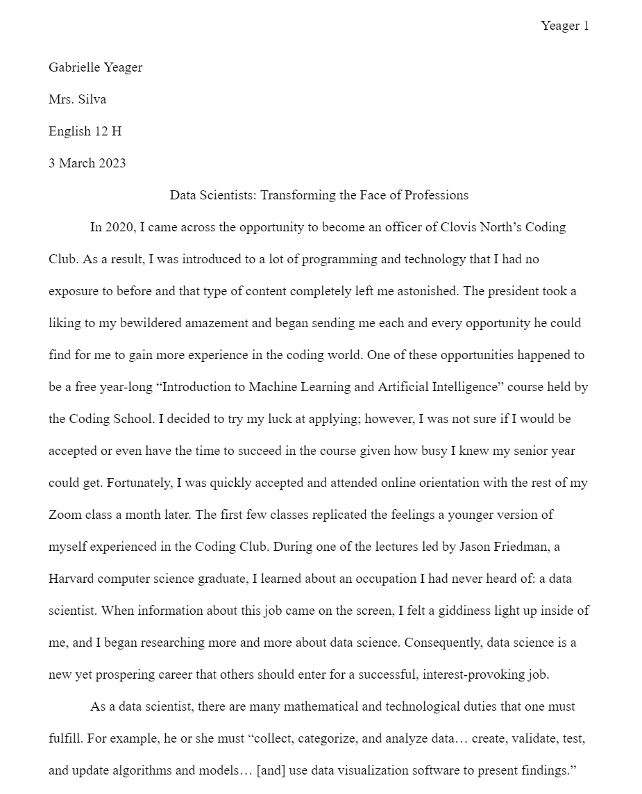

Skinwalker
As a creative person, I have found myself creating numerous original stories in my head. Consequently, I love illustrating these stories from thoughts onto paper when I find that I have the time to. “Skinwalker”, the below sample, is a creative/personal story that has been in progress since late 2020. The purpose of this particular piece was to introduce the reader to all of the main characters in an engaging manner without causing an information overload. At the time of writing this paper, I also had taken a long hiatus from any type of creative writing. As a result, creating this story helped me kickstart my familiarity with the genre and how to properly write it. I decided to select this sample for my portfolio because I believe that this writing showcases my ability to be creative when I have the freedom to do so. I also want to visually prove that my talents extend far beyond educational materials, such as academic essays, rather than verbally telling users that I am not limited to creating scholarly material.

Data Scientists: Transforming the Face of Professions
“Data Scientists: Transforming the Face of Professions” is the most recent essay I wrote for my Honors English class at CART. The purpose of this task was to write a research essay about a career you are interested in. In order to give us more experience with Modern Language Association (MLA) format, my English teacher required us to manually change the settings of the page and type out our own “Works Cited” page. In addition to this valuable knowledge, this assignment also lets us research potential careers that are related to our Web Applications course or general interests. Because I am considering going into data science or software engineering, I wrote my essay on data scientists as I already have a lot of prior knowledge about the latter. I wanted to showcase this sample because I recognize that knowing how to use MLA correctly and write proper academic papers is critical in college and the professional world. Additionally, I wanted to emphasize my research skills and ability to condense what I have learned into engaging, original material.